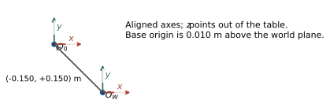
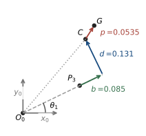
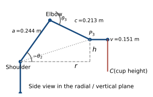

Name: [fill in] NetID: xliu173
Partner: [fill in] TA: [fill in]
Section: [fill in] Date submitted: [fill in]
Draft — identifying information and TA review pending. 2 of 2 physical measurements are recorded. Complete any remaining measurements and the identifying information before submission.
This lab develops an analytical elbow-up inverse-kinematics solution for the UR3e. The input is a suction-cup position in the table's world frame and a yaw angle. The remaining orientation is fixed: θ5 = −π/2 and the wrist links are kept parallel to the table. The computed angles are checked with the Lab 3 product-of-exponentials forward model before conversion to robot encoder angles.
The world and base axes are aligned. The Lab 3 model locates the base origin at (−0.150, 0.150, 0.010) m in the world frame. Figure 1 shows the planar translation. For a world-frame cup position GW, the base-frame coordinates are

All derivation distances are in meters and angles are in radians. The repository's Lab 3 forward transform expresses translation in millimeters, so it is divided by 1000 before comparison with the target. The nominal dimensions used here are L1 = 0.152, L2 = 0.120, L3 = 0.244, L4 = −0.093 (signed transverse offset), L5 = 0.213, L6 = 0.104, L7 = 0.085, L8 = 0.092, L9 = 0.0535, and L10 = 0.059.
Let ψ be the desired world yaw, with ψ = π·yawdeg/180. The plate points from the joint-6 axis toward the cup at this yaw. Subtract its horizontal length p = L9 to obtain the virtual wrist center C, which is at the cup's height:
In Figure 2, er = (cos θ1, sin θ1) and et = (−sin θ1, cos θ1). The net transverse offset is d = L2 + L4 + L6 = 0.131. Writing Cxy = (r + b)er + d et, with b = L7, gives ρ = √(xc² + yc²) and the selected waist solution
The branch uses r + b ≥ 0. A center with ρ < d is unreachable. At θ6 = 0, the plate points along et. With θ5 = −π/2, joint 6 rotates about downward vertical, so ψ = θ1 + π/2 − θ6. Thus

Remove the radial wrist link and transverse offset, then raise the virtual point by v = L8 + L10 = 0.151. The endpoint P3 is
Figure 3 reduces the arm to a two-link triangle. Define a = L3 = 0.244, c = L5 = 0.213, signed radial distance r, height h, and triangle length D:
The signed projection is retained even when P3 lies behind the radial origin. The triangle exists only if |a − c| ≤ D ≤ a + c, or 0.031 ≤ D ≤ 0.457 m.

The elbow deflection follows from D² = a² + c² + 2ac cos θ3. The positive deflection selects the elbow-up solution:
The target elevation is β = atan2(h, r). The angle between the upper arm and the shoulder-to-target ray is α = acos[(a² + D² − c²)/(2aD)]. An equivalent expression used in code avoids inconsistent rounding near straight and folded configurations:
Positive rotation about the model's shoulder y-axis lowers the arm, hence the negative sign. The elbow-up branch places the upper arm above the target ray. Keeping the radial wrist link level requires θ2 + θ3 + θ4 = 0. The two fixed-orientation constraints therefore yield
The geometric angles are passed to lab_fk(). Its encoder conversion is
q = (θ1 + π, θ2, θ3, θ4 − π/2,
θ5, θ6). These offsets are applied once, after FK verification.
Table 1 lists the experiment targets and numerical IK/FK residuals recomputed from
the saved input coordinates. The user supplied terminal logs for two physical runs
on robot bench 7. Both logs report Requested joint pose reached.
The supplied measurements were recorded in centimeters and converted to meters for Table 2.
P2 uses the same centimeter convention as P1; its unit was not repeated in the original note.
| Point | Desired (xW, yW, zW) | Yaw | FK residual (m) |
|---|---|---|---|
| P1 | (0.270, 0.330, 0.230) | 90 | 1.36e-16 |
| P2 | (0.180, -0.100, 0.060) | -45 | 4.01e-16 |
The largest listed FK position residual is 4.013e-16 m. The returned orientation is checked against Rz(ψ), with fixed roll and pitch in the Lab 3 tool-frame convention. Seventeen regression tests also cover 200 forward-generated poses, workspace boundaries, encoder conversion, wrapped yaw, and invalid targets.
The independent ruler/square measurements belong in Table 2. Their scalar error is
| Point | Measured (x, y, z), m | Scalar error, mm |
|---|---|---|
| P1 | (0.265, 0.328, 0.227) | 6.164 |
| P2 | (0.182, -0.100, 0.068) | 8.246 |
Physical-results discussion: The measured-minus-target position residuals are P1: (-5.0, -2.0, -3.0) mm; P2: (+2.0, +0.0, +8.0) mm. The smallest scalar error is 6.164 mm at P1, and the largest is 8.246 mm at P2. The mean scalar error is 7.205 mm. Position errors are much larger than the numerical IK/FK residuals. The available measurements do not isolate a dominant error source. Yaw was commanded but was not independently measured numerically.
Potential position errors include uncertainty in the base/world origin, ruler resolution and parallax, nominal link lengths differing from calibrated dimensions, variation in suction-cup compression, and tool mounting offsets. An origin error can shift all measured points similarly; geometry or tool errors can vary with pose. These explanations should be compared with the actual measurements before identifying a dominant source.
The analytical solver computes all six geometric angles for the selected elbow-up branch and applies the Lab 3 encoder offsets. Its numerical checks reproduce the requested position and yaw, and invalid geometric targets are rejected before motion. The software has been built with ROS 2 Jazzy and exercised using the dry-run command.
The recorded position errors range from 6.164 to 8.246 mm. The supplied terminal logs for P1 and P2 both report that the requested joint pose was reached. This confirms the executable reported motion completion; TA assessment and independent yaw accuracy are not established by those messages.
[1] ECE 470, Lab 4: Inverse Kinematics, supplied Lab4_Manual.pdf,
pp. 40–47.
[2] ECE 470, Lab Report Guidelines,
course report guidelines.
[3] Popilworck, ece470 repository, Lab 3 forward model, commit 839462c,
GitHub repository.
All three figures were generated specifically for this report.
lab_func.py contains the reusable lab_ik_angles() solver,
forward_kinematics() transform, and lab_invk() integration.
The FK model and nominal dimensions remain consistent with Lab 3.
The Lab 4 executable accepts world coordinates in meters and yaw in degrees.
Its dry-run path does not create a ROS node.
cd /home/xliu173/ece470/ece470lab/lab_files source /opt/ros/jazzy/setup.bash source .lab4-install/local_setup.bash ros2 run ece470labs lab4_exec 0.1 0.1 0.15 90 --dry-run
For physical motion, follow lab4/README.html and omit
--dry-run. Record ruler/square measurements in measurements.csv.
Run python3 lab4/generate_report.py to recompute errors and export the report.
Complete the identifying information and physical-results discussion before submission.